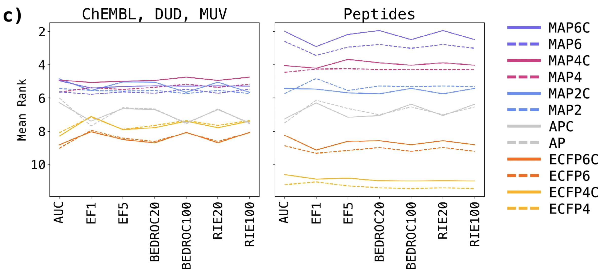
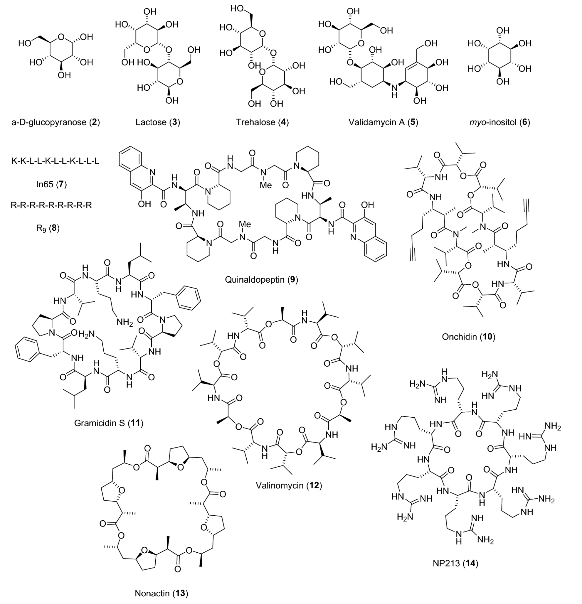

MAP4C: One chiral fingerprint to find them all (Orsi and Reymond 2024)
Why did I choose this paper?
- one of the latest papers for molecular fingerprints
- combines two important FPs being ECFP and AP FPs
- wanted to learn something about fingerprints, because of potential importance for future machine learning tasks
General
- Authors:
- Markus Orsi → University of Bern, Biochemistry and Pharmacy
- Jean-Louis Reymond → same as Orsi
- both are Cheminformaticians (MAYGEN, Surge, etc)
- Journal:
- Journal of Cheminformatics, 2024
- Notes:
- MAP4C = Minhashed Atom-Pair Chiral Fingerprint with diameter 4
- builds on top of previously published MAP4 (Capecchi, Probst, and Reymond 2020)
Prior work
Extended connectivity fingerprint (Rogers and Hahn 2010)
- digital representation of a molecule’s structure
- conversion of molecule’s structural or chemical features into a binary or bit-string format
- historically developed for substructure and similarity searching + structure-activity modeling
- advantages: fast calculation and representation of infinite number of molecular features
Workflow

- Step 1: Assigning an integer identifier to each atom
- random enumeration of atoms
- for each atom the following properties are then quantified
- Number of non-hydrogen immediate neighbors (3)
- total bond order ignoring bonds to hydrogens (4 - 0)
- Atomic number (6)
- Atomic mass (12)
- Atomic charge (0)
- Number of attached hydrogens (0)
- is atom part of ring? (0 –> no)
- all features are then hashed into one integer
identifier = hash((3, 4, 6, 12, 0, 0, 0)) print(identifier) # -2155244659601281804- repeat this process for all non-hydrogen atoms
# Iteration 0 1: -4080868480043360372 2: 8311098529014133067 3: 8311098529014133067 4: -2155244659601281804 5: -3602994677767288312 6: 8573586092015465947 - Step 2: Iteratively updating the atom identifiers
- initialization of list of tuples with iteration number and identifier (Atom 4)
[(1, -2155244659601281804)]- addition of two more numbers for each non-hydrogen neighbor
- first: bond order
- second: neighbours identifier
- conversion to pure list
[1, -2155244659601281804, 1, -3602994677767288312, 1, 8311098529014133067, 2, 8573586092015465947]- list is then hashed again
- feature now includes information about direct neighbors
identifier_updated = hash([1, -2155244659601281804, 1, -3602994677767288312, 1, 8311098529014133067, 2, 8573586092015465947]) print(identifier_updated) # 3790237506519639747 ... # Iteration 1 1: -3879702859024654160 2: 2648074263463118673 3: 9209025387859845960 4: 3790237506519639747 5: -8399737669368778010 6: 3271801898087186516- repetition of the mentioned process but with neighbors of neighbors (Iteration 2)
- after each iteration the identifiers are added to a feature list
# 18 items, 6 per iteration (0, 1 and 2) [-4080868480043360372, 8311098529014133067, 8311098529014133067, -2155244659601281804, -3602994677767288312, 8573586092015465947, -3879702859024654160, 2648074263463118673, 9209025387859845960, 3790237506519639747, -8399737669368778010, 3271801898087186516, 7820245418060671737, -8234949431280515543, -5902629546112570760, -3660103599533977242, -5964710996914813053, 8916398073441202914]
Iterations shown with different example: benzoic acid amide
- Step 3: Deduplication
- removing duplicates from feature list (4 removed, 14 left)
- Step 4: Conversion of identifiers to bit array
- initialize 1024 bit zero-array
import numpy as np fp = np.zeros(1024) # traditionally a 1024 bit array is chosen print(fp) # array([0., 0., 0., ..., 0., 0., 0.])- division of each identifier by bit-array length (1024) and calculation of remainder
- Example:
4080868480043360372 % 1024 = 908
- Example:
remainders = [908, 331, 244, 520, 475, 176, 849, 840, 707, 742, 84, 553, 632, 358]- each remainder represents the position/index in the bit zero-array at which a zero is changed to a one
for x in remainders: fp[x] = 1 print(fp) # [0, 0, 0, 0, 0, 0, 0, 0, 0, 0, 0, 0, 0, 0, 0, 0, 0, 0, 0, 0, 0, 0, 0, 0, 0, 0, 0, 0, 0, 0, 0, 0, 0, 0, 0, 0, 0, 0, 0, 0, 0, 0, 0, 0, 0, 0, 0, 0, 0, 0, 0, 0, 0, 0, 0, 0, 0, 0, 0, 0, 0, 0, 0, 0, 0, 0, 0, 0, 0, 0, 0, 0, 0, 0, 0, 0, 0, 0, 0, 0, 0, 0, 0, 0, 1, 0, 0, 0, 0, 0, 0, 0, 0, 0, 0, 0, 0, 0, 0, 0, 0, 0, 0, 0, 0, 0, 0, 0, 0, 0, 0, 0, 0, 0, 0, 0, 0, 0, 0, 0, 0, 0, 0, 0, 0, 0, 0, 0, 0, 0, 0, 0, 0, 0, 0, 0, 0, 0, 0, 0, 0, 0, 0, 0, 0, 0, 0, 0, 0, 0, 0, 0, 0, 0, 0, 0, 0, 0, 0, 0, 0, 0, 0, 0, 0, 0, 0, 0, 0, 0, 0, 0, 0, 0, 0, 0, 1, 0, 0, 0, 0, 0, 0, 0, 0, 0, 0, 0, 0, 0, 0, 0, 0, 0, 0, 0, 0, 0, 0, 0, 0, 0, 0, 0, 0, 0, 0, 0, 0, 0, 0, 0, 0, 0, 0, 0, 0, 0, 0, 0, 0, 0, 0, 0, 0, 0, 0, 0, 0, 0, 0, 0, 0, 0, 0, 0, 0, 0, 0, 0, 0, 0, 0, 0, 1, 0, 0, 0, 0, 0, 0, 0, 0, 0, 0, 0, 0, 0, 0, 0, 0, 0, 0, 0, 0, 0, 0, 0, 0, 0, 0, 0, 0, 0, 0, 0, 0, 0, 0, 0, 0, 0, 0, 0, 0, 0, 0, 0, 0, 0, 0, 0, 0, 0, 0, 0, 0, 0, 0, 0, 0, 0, 0, 0, 0, 0, 0, 0, 0, 0, 0, 0, 0, 0, 0, 0, 0, 0, 0, 0, 0, 0, 0, 0, 0, 0, 0, 0, 0, 0, 0, 1, 0, 0, 0, 0, 0, 0, 0, 0, 0, 0, 0, 0, 0, 0, 0, 0, 0, 0, 0, 0, 0, 0, 0, 0, 0, 0, 1, 0, 0, 0, 0, 0, 0, 0, 0, 0, 0, 0, 0, 0, 0, 0, 0, 0, 0, 0, 0, 0, 0, 0, 0, 0, 0, 0, 0, 0, 0, 0, 0, 0, 0, 0, 0, 0, 0, 0, 0, 0, 0, 0, 0, 0, 0, 0, 0, 0, 0, 0, 0, 0, 0, 0, 0, 0, 0, 0, 0, 0, 0, 0, 0, 0, 0, 0, 0, 0, 0, 0, 0, 0, 0, 0, 0, 0, 0, 0, 0, 0, 0, 0, 0, 0, 0, 0, 0, 0, 0, 0, 0, 0, 0, 0, 0, 0, 0, 0, 0, 0, 0, 0, 0, 0, 0, 0, 0, 0, 0, 0, 0, 0, 0, 0, 0, 1, 0, 0, 0, 0, 0, 0, 0, 0, 0, 0, 0, 0, 0, 0, 0, 0, 0, 0, 0, 0, 0, 0, 0, 0, 0, 0, 0, 0, 0, 0, 0, 0, 0, 0, 0, 0, 0, 0, 0, 0, 0, 0, 0, 0, 1, 0, 0, 0, 0, 0, 0, 0, 0, 0, 0, 0, 0, 0, 0, 0, 0, 0, 0, 0, 0, 0, 0, 0, 0, 0, 0, 0, 0, 0, 0, 0, 0, 1, 0, 0, 0, 0, 0, 0, 0, 0, 0, 0, 0, 0, 0, 0, 0, 0, 0, 0, 0, 0, 0, 0, 0, 0, 0, 0, 0, 0, 0, 0, 0, 0, 0, 0, 0, 0, 0, 0, 0, 0, 0, 0, 0, 0, 0, 0, 0, 0, 0, 0, 0, 0, 0, 0, 0, 0, 0, 0, 0, 0, 0, 0, 0, 0, 0, 0, 0, 0, 0, 0, 0, 0, 0, 0, 0, 0, 0, 0, 1, 0, 0, 0, 0, 0, 0, 0, 0, 0, 0, 0, 0, 0, 0, 0, 0, 0, 0, 0, 0, 0, 0, 0, 0, 0, 0, 0, 0, 0, 0, 0, 0, 0, 0, 0, 0, 0, 0, 0, 0, 0, 0, 0, 0, 0, 0, 0, 0, 0, 0, 0, 0, 0, 0, 0, 0, 0, 0, 0, 0, 0, 0, 0, 0, 0, 0, 0, 0, 0, 0, 0, 0, 0, 0, 1, 0, 0, 0, 0, 0, 0, 0, 0, 0, 0, 0, 0, 0, 0, 0, 0, 0, 0, 0, 0, 0, 0, 0, 0, 0, 0, 0, 0, 0, 0, 0, 0, 0, 0, 1, 0, 0, 0, 0, 0, 0, 0, 0, 0, 0, 0, 0, 0, 0, 0, 0, 0, 0, 0, 0, 0, 0, 0, 0, 0, 0, 0, 0, 0, 0, 0, 0, 0, 0, 0, 0, 0, 0, 0, 0, 0, 0, 0, 0, 0, 0, 0, 0, 0, 0, 0, 0, 0, 0, 0, 0, 0, 0, 0, 0, 0, 0, 0, 0, 0, 0, 0, 0, 0, 0, 0, 0, 0, 0, 0, 0, 0, 0, 0, 0, 0, 0, 0, 0, 0, 0, 0, 0, 0, 0, 0, 0, 0, 0, 0, 0, 0, 1, 0, 0, 0, 0, 0, 0, 0, 0, 1, 0, 0, 0, 0, 0, 0, 0, 0, 0, 0, 0, 0, 0, 0, 0, 0, 0, 0, 0, 0, 0, 0, 0, 0, 0, 0, 0, 0, 0, 0, 0, 0, 0, 0, 0, 0, 0, 0, 0, 0, 0, 0, 0, 0, 0, 0, 0, 0, 0, 0, 0, 0, 0, 0, 0, 0, 0, 0, 1, 0, 0, 0, 0, 0, 0, 0, 0, 0, 0, 0, 0, 0, 0, 0, 0, 0, 0, 0, 0, 0, 0, 0, 0, 0, 0, 0, 0, 0, 0, 0, 0, 0, 0, 0, 0, 0, 0, 0, 0, 0, 0, 0, 0, 0, 0, 0, 0, 0, 0, 0, 0, 0, 0, 0, 0, 0, 0, 0, 0, 0, 0, 0, 0, 0, 0, 0, 0, 0, 0, 0, 0, 0, 0, 0, 0, 0, 0, 0, 0, 0, 0, 0, 0, 0, 0, 0, 0, 0, 0, 0, 0, 0, 0, 0, 0, 0, 0, 0, 0, 0, 0, 0, 0, 0, 0, 0, 0, 0, 0, 0, 0, 0, 0, 0]- final bit array has been created = molecular fingerprint
Atom-Pair fingerprint (Carhart, Smith, and Venkataraghavan 1985)
- similar to ECFP but for each atom all possible atom pairs including their distance are collected as features

AP vs ECFP
- AP is suitable for large molecules but does not encode molecular structure in detail
- ECFP is very detailed and suitable for small molecules but misses poor perception of global features
Abstract
chirality often not considered in fingerprints
developed MAP4C (chiral version of MAP4, publ. in 2020)
MAP → “MinHashed Atom-Pair fingerprint up to four bonds”
concept:
- “MinHashes computed from character strings containing the SMILES of all pairs of circular substructures up to a diameter of four bonds and the shortest topological distance between their central atoms.”
- MinHash = compression technique and used for similarity estimation (Probst and Reymond 2018)
- includes Cahn-Ingold-Prelog annotation (r,s)
- “?” is used for undefined stereocenters and double bonds
claim:
- can distinguish between stereoisomers of small drugs to large natural products and peptides
Introduction
- What is a FP?
- vectors encoding molecular structure
- usage of fingerprints in general:
- similarity & substructure search, clustering
- ligand-based virtual screening & target prediction
- Why are there almost no chiral FPs?
- many small drug-like compounds are achiral (Paracetamol, Xylometazolin (Nasenspray), Amylmetakresol (Neo-Angin))
“Correlation between chirality and heavy atom count (HAC) across ChEMBL, COCONUT, and ZINC datasets. The blue line depicts the percentage of chiral molecules relative to HAC. A steady increase in the percentage of chiral molecules is observed with increasing HAC. The yellow line represents the total count of molecules corresponding to each HAC.”
- Principle of MAP4C?
- combination of circular substructure encoding with data compression using MinHashing
- encodes all possible pairs of circular substructures up to diameter of 4 bonds
- pairs are written as two canonical smiles separated by shortest topological distance, counted in bonds between corresponding pair of central atoms
- includes CIP-annotation
- seems to be combination of circular FP and Atom Pair FP
- Atom Pair = list all possible pairs and their distance
- Advantage over ECFP4 (Extended Connectivity) and AP (Atom Pair) FPs?
- spans wider range of compound classes like small molecules, NPs, peptides and metabolites (claim)
- is chiral
Methods
- implementation in python (RDKit)
- extraction of circular substructures at every non-hydrogen atom up to specified radius (r=2) as SMILES
- isomeric information (“@”, “@@”) is removed manually
- allene and conformational chirality not considered because not supported by SMILES (
- Radius 0 skipped (no single atom information)
- if central atom is chiral, first atom symbol of max-radius SMILES is replaced by CIP-descriptor (e.g. “\(R\)”)
- at each radius “shingles” are generated for all possible pairs of extracted substructures
- substructure 1 | topological distance | substructure 2
- “shingles” → subsequences of a sequence
- Application of MinHash to obtain fixed size vector
“Chiral shingle generation concept exemplified on a selected atom pair of polymyxin B2. The generated shingle corresponds to the pair of circular substructures (blue) separated by the shortest topological distance (red) of their central atoms. Whenever the central atom of a substructure is chiral, the atom symbol in the substructure SMILES is replaced by the Cahn-Ingold-Prelog (CIP) descriptor (R, S, r, or s), or by a question mark (?) if the stereochemistry is not defined, bracketed by two “$” characters (yellow).”
- extraction of circular substructures at every non-hydrogen atom up to specified radius (r=2) as SMILES
- Benchmark
- MAP4C was compared with ECFP4 and 6, and Atom-Pair FP
- Benchmark by Riniker and Landmark which was made chiral + 60 peptide sets
Figure S3. Distribution of molecular weight (MW) (yellow), number of stereocenters (magenta) and ratio of stereocenters to heavy atom count (blue) in the set uniformly sampled from the extended benchmark. The set contained a total of 10,122 compounds and was used to determine the relative impact of stereochemistry encoding on total similarity. - generated all possible stereoisomers, isomers and scrambled sequences with RDKit
- usage of 2048 bit vectors
- TMAP:
- visualization of biochemical similarity
Results
- Encoding stereochemistry in MAP fingerprints
- In simple words: map4 and map4c of the same molecule with and without stereochemistry are similar, as intended
- Virtual screening benchmark
- AUC, EF1, BEDROC, etc are all metrics for comparing virtual screening methods whose purpose is to rank active compounds towards e.g. an enzyme
- comparison of performance of MAP, ECFP and AP FPs and their chiral counter parts → MAP4C performed best (fig 2c)

“Mean ranks of fingerprints across all virtual screening datasets for each metric. Small molecule sets (ChEMBL, DUD, MUV) and peptide sets are presented separately to highlight the differences in relative performance” - explanation: combination of high local precision from ECFP and reflection of global features from Atom-Pairs FP
- slight bump compared to non-chiral MAPs due to chirality
Finding all stereoisomers
- Tab1 shows ability to assign a different fingerprint value for each stereoisomer on a series of stereochemically complex molecules comprizing carbohydrates, peptides and macrocyclic natural products (molecules shown in fig3)
- MAPC performed well on sugars and peptides
- performance decreased for macrocyclic NPs
- Tab1 shows ability to assign a different fingerprint value for each stereoisomer on a series of stereochemically complex molecules comprizing carbohydrates, peptides and macrocyclic natural products (molecules shown in fig3)
| Query | N / Sym. | Total | MAP6C | MAP4C | MAP2C | APC | ECFP6C | ECFP4C |
|---|---|---|---|---|---|---|---|---|
| α-D-glucopyranose (2) | 5 /– | 32 | 32 | 32 | 32 | 11 | 32 | 32 |
| Lactose (3) | 10 / – | 1,024 | 1,024 | 1,024 | 992 | 443 | 1,024 | 1,024 |
| Trehalose (4) | 10 / C2 | 528 | 528 | 528 | 516 | 336 | 528 | 512 |
| Validamycin A (5) | 14 / – | 16,384 | 16,384 | 16,384 | 16,384 | 7,657 | 16,384 | 16,384 |
| Inositol (6) | 6 / C6v | 9 | 9 | 9 | 9 | 1 | 1 | 1 |
| ln65 (7) | 11 / – | 2,048 | 2,048 | 2,048 | 2,048 | 196 | 1,140 | 36 |
| ln65 (scrambled) | 11 / – | 330 | 330 | 330 | 330 | 330 | 8 | 4 |
| ln65 (dia × scrambled) | 11 / – | 675,840 | 675,840 | 675,840 | 675,840 | 90,217 | 38,500 | 144 |
| R9 (8) | 9 / – | 512 | 512 | 512 | 512 | 146 | 88 | 12 |
| Polymyxin B2 (1) | 12 / – | 4,096 | 4,096 | 4,096 | 4,096 | 2,500 | 4,096 | 1,536 |
| PMB2 (scrambled) | 9 / – | 1,512 | 1,512 | 1,512 | 1,512 | 1,512 | 861 | 75 |
| PMB2 (dia × scrambled) | 9 / – | 774,144 | 774,144 | 774,144 | 774,144 | 287,631 | 602,003 | 9,312 |
| PMB2 (R, S or undefined) | 12 / – | 531,441 | 531,441 | 531,441 | 531,441 | 277,901 | 531,441 | 137,781 |
| Quinaldopeptin (9) | 8 / C2 | 136 | 136 g) | 136 | 134 | 64 | 132 | 90 |
| Onchidin (10) | 12 / C2 | 2,080 | 2,080 | 2,080 | 2,064 | 469 | 1,760 | 810 |
| Gramicidin S (11) | 10 / C2 | 528 | 528 | 504 | 334 | 25 | 448 | 243 |
| Valinomycin (12) | 12 / C3 | 1,376 | 1,250 | 714 | 416 | 112 | 616 | 27 |
| Nonactin (13) | 16 / C4 | 16,456 | 16,425 | 16,176 | 10,045 | 13,189 | 6,474 | 675 |
| NP213 (14) | 7 / C7 | 20 | 7 | 13 | 17 | 13 | 5 | 3 |

“Structures of natural products and peptides selected for the stereoisomer distinction task”
- Ranking stereoisomers versus isomers
- Fig4 shows that MAP4C works well in differentiating stereo and structural isomers
- this is indicated by the much higher jaccard distance (similarity measure) for the MAP FPs, which shows that though there are only small changes in chirality and structure, the FP is still sensitive to their difference
“structural isomers of 1,4-diaminocyclohexane (203) and 4-aminopiperidine (48) and their diastereomers. The skewed distribution of Jaccard distance of 15 with MAP6C is caused by two outliers exhibiting a distance of 0 which cannot be represented on the log scale and is likely due to a bit-clash issue.”
- Fig4 shows that MAP4C works well in differentiating stereo and structural isomers
Conclusion
- chiral version of MAP performs as good as achiral versions
- perform better in distinguishing stereoisomers than chiral ECFP and AP
What I liked/didn’t like about the paper
- didn’t like:
- hard to read
- TMAP not explained (supposed to mean Tree MAP)
- “scrambled sequences” not explained
- repetition of how FP works in methods and beginning of results
- in supporting info S4 figure “c” is missing
- typical paper from the “our tool is the best”-field, would have been nice if they included some critical statistics for e.g. bit-collisions
- no reference made to the field of machine learning
- like:
- they made quite an effort to test their new FP
References
Capecchi, Alice, Daniel Probst, and Jean-Louis Reymond. 2020. “One Molecular Fingerprint to Rule Them All: Drugs, Biomolecules, and the Metabolome.” Journal of Cheminformatics 12: 1–15.
Carhart, Raymond E, Dennis H Smith, and RENGACHARI Venkataraghavan. 1985. “Atom Pairs as Molecular Features in Structure-Activity Studies: Definition and Applications.” Journal of Chemical Information and Computer Sciences 25 (2): 64–73.
Guo, Jeff, and Philippe Schwaller. 2024. “It Takes Two to Tango: Directly Optimizing for Constrained Synthesizability in Generative Molecular Design.” arXiv. https://doi.org/10.48550/ARXIV.2410.11527.
Landrum, Gregory A., Jessica Braun, Paul Katzberger, Marc T. Lehner, and Sereina Riniker. 2024. “Lwreg: A Lightweight System for Chemical Registration and Data Storage.” Journal of Chemical Information and Modeling 64 (16): 6247–52. https://doi.org/10.1021/acs.jcim.4c01133.
Orsi, Markus, and Jean-Louis Reymond. 2024. “One Chiral Fingerprint to Find Them All.” Journal of Cheminformatics 16 (1): 53.
Probst, Daniel, and Jean-Louis Reymond. 2018. “A Probabilistic Molecular Fingerprint for Big Data Settings.” Journal of Cheminformatics 10: 1–12.
Rogers, David, and Mathew Hahn. 2010. “Extended-Connectivity Fingerprints.” Journal of Chemical Information and Modeling 50 (5): 742–54.